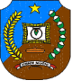

Pilih kelas untuk menampilkan rekap nilai rapor.
Kolom mata pelajaran diambil dari Daftar mapel (Firestore: Daftar/mapel, yang terisi dari halaman Data Guru); nama kolom memakai singkatan di daftar itu, dan semua mapel agama digabung jadi satu kolom. Bila Daftar mapel belum ada, kolom mengikuti mapel yang diampu pada kelas itu di Data Guru. Nilai akhir tiap mapel diambil otomatis dari Rekap Nilai masing-masing guru (kelas dan mapel yang sama, semester dan tahun pelajaran berjalan). KKM tiap mapel otomatis mengikuti KKM yang diisi guru di Rekap Nilai masing-masing (75 bila belum disimpan). Angka merah berarti di bawah KKM. Nama wali kelas dipilih dari Data Guru dan diingat di perangkat ini.
Tampilan ini berubah otomatis mengikuti kelas, wali kelas, dan nilai guru.

REKAP NILAI RAPOR PESERTA DIDIK